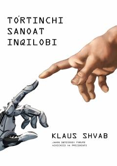

TSTo'rtinchi sanoat inqilobining iqtisodiyot va jamiyatga ta'siri haqidagi fundamental tahliliy asar.
Klaus Shvab ushbu asarida to'rtinchi sanoat inqilobining mohiyati, uning iqtisodiyot va jamiyatga ta'siri hamda texnologik o'zgarishlarning kelajakdagi o'rni haqida so'z yuritadi. Kitob sun'iy intellekt, robototexnika va raqamli texnologiyalarning inson hayotini tubdan o'zgartirayotganini tizimli tahlil qiladi.